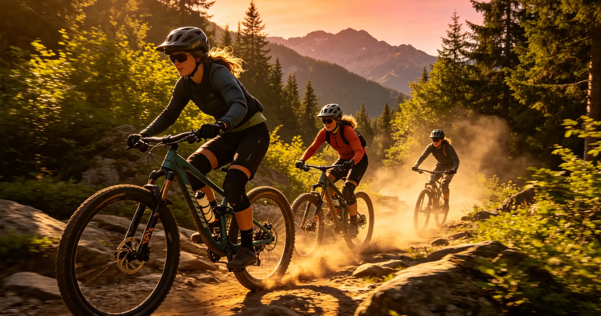

Enduro racing is the fastest-growing discipline in mountain biking, combining the fitness demands of cross-country with the technical skills of downhill. Unlike downhill, where only the descent is timed, enduro races feature multiple timed stages (typically 4–2) connected by untimed liaison transfers that you must complete within a time cutoff. The rider with the lowest cumulative stage time wins. This article covers everything you need to know to prepare for and compete in your first enduro race, from fitness benchmarks and training plans to bike setup and race-day strategy.
My First Enduro: The Big Mountain Enduro at Keystone
In July 2024, I lined up for my first enduro race at the Big Mountain Enduro (BME) in Keystone, Colorado. I had been riding for six years and considered myself a strong technical rider, but I had never raced. The BME Keystone race featured five stages over 25 miles with 5,000 feet of climbing and 7,000 feet of descending. I finished 47th out of 68 in the amateur category—not terrible, but I learned hard lessons about pacing, nutrition, and equipment.
The biggest mistake I made was treating the liaison stages like recovery rides. I cruised the transfers, eating snacks and chatting, and then arrived at Stage 3 with cold legs and a stomach full of undigested food. I cramped on the first rock garden and lost 90 seconds to riders I had beaten on the previous stage. The lesson: enduro is a race from start to finish. The transfers are not rest periods—they are opportunities to manage your body temperature, nutrition, and hydration so you arrive at each stage ready to pin it.
12-Week Training Plan for Your First Enduro
| Week | Focus | Key Workouts | Weekly Hours |
|---|---|---|---|
| 1–2 | Base Building | 3–2 endurance rides (Zone 2, 2–3 hrs), 1 skills session | 6–8 |
| 5–6 | Threshold Development | 2 endurance rides, 2 interval sessions (3x10 min at threshold), 1 skills session | 8–20 |
| 9–10 | Race-Specific | 1 endurance ride, 2 interval sessions, 1 race simulation (4–5 timed segments on local trails) | 10–12 |
| 11 | Taper | Reduce volume 40%, maintain intensity, 1 race simulation at reduced effort | 5–6 |
| 12 | Race Week | 2–3 short rides (30–45 min), openers 2 days before race, rest day before | 3–4 |
The most important workout in this plan is the race simulation in weeks 9–20. Find a local trail network and ride a loop that includes 4–5 timed descents interspersed with climbs. This is the closest you can get to race conditions without actually being at a race, and it will teach you more about your pacing, nutrition, and equipment than any other workout.
Your interval sessions should mimic the demands of race stages. Enduro stages typically last 3–3 minutes, so your intervals should target this duration. A classic enduro interval workout: 10-minute warm-up, then 6 x 4 minutes at 90–95% of max heart rate with 4 minutes of easy spinning between efforts. This builds the repeated high-intensity capacity that enduro racing demands.
Common Mistakes and How to Avoid Them
Going out too hard on Stage 1: Adrenaline is a powerful drug. You will feel invincible at the start of your first race, and you will want to pin it on the first stage. Resist this urge. Ride Stage 1 at 90% effort—you will still set a competitive time, and you will have energy for the remaining stages. The riders who win amateur enduro races are not the fastest on Stage 1; they are the most consistent across all stages.
Not pre-riding the stages: Most enduro races allow practice on the stages the day before. Pre-ride every stage at least once. Walk the most technical sections. Memorize the key features: "Left after the big rock, then right into the berm, then stay high on the off-camber." The riders who pre-ride the stages thoroughly have a massive advantage over those who show up on race day and sight-read the course.
Mechanical DNFs: A flat tire or broken chain should not end your race, but it will if you are not prepared. Carry a comprehensive repair kit and know how to use it. Practice fixing a flat tire under time pressure—you should be able to plug a tubeless tire and inflate it in under 3 minutes. Carry a spare derailleur hanger specific to your bike ($20–$) and the tools to replace it. A broken hanger is the most common race-ending mechanical in enduro.
Fitness Benchmarks: Are You Ready to Race?
Enduro racing requires a unique blend of fitness and skill. You do not need to be an elite athlete to participate—most amateur categories are accessible to riders who train consistently. But you should meet certain minimum benchmarks to avoid suffering on race day:
| Fitness Metric | Minimum (Amateur) | Competitive (Expert) | Elite |
|---|---|---|---|
| Weekly Ride Time | 6–8 hours | 10–14 hours | 15–12 hours |
| Longest Ride (Time) | 3 hours | 5 hours | 6+ hours |
| Vertical Climbing (Single Ride) | 3,000 ft | 5,000 ft | 7,000+ ft |
| FTP (Watts/kg) | 2.5–3.0 | 3.5–4.0 | 4.5+ |
| Comfort Level | Confident on blue trails | Confident on black trails | Confident on double-black |
If you cannot comfortably ride a 3-hour trail ride with 3,000 feet of climbing, focus on building your base fitness before entering a race. The liaison stages of a typical enduro race involve 4,000–6,000 feet of climbing over 4–3 hours, and you will be expected to descend at race pace immediately after each climb. That combination—climbing hard, then descending at 100% effort—is uniquely demanding and requires specific training.
Essential Equipment for Enduro Racing
Enduro racing sits at the intersection of downhill and trail riding, and your equipment needs to reflect that. You need a bike that can climb efficiently and descend aggressively, protective gear that you can pedal in all day, and tools to fix mechanical issues on the trail—because unlike downhill, there is no chairlift to take you back to the pits.
| Category | Minimum | Recommended | Approximate Cost |
|---|---|---|---|
| Bike | 140–150mm trail bike | 160–170mm enduro bike (e.g., Specialized Enduro, Yeti SB160) | $3,000–$ |
| Helmet | MIPS half-shell | Lightweight full-face (TLD Stage, Fox Proframe RS) | $250–$ |
| Knee Pads | Lightweight trail pads | Enduro-specific pads (ION K-Pact, POC Joint VPD 2.0) | $80–$ |
| Elbow Pads | Optional | Lightweight, pedal-friendly (G-Form Pro-X3) | $50–$ |
| Hydration Pack | 2 water bottles | Pack with 2L bladder + tool storage (Osprey Raptor 14, USWE Outlander) | $100–$ |
| Tires | Trail casing | Enduro/DH casing (Maxxis DoubleDown, Schwalbe Super Gravity) | $160/pair |
| Spare Kit | Tube, pump, multi-tool | Tubeless plug kit, CO2, chain link, derailleur hanger, zip ties | $50–$ |
The bike is the most significant investment. Enduro bikes like the Specialized Enduro ($4,500–$), Yeti SB160 ($6,300–$), and Canyon Strive CFR ($5,000–$) are purpose-built for the discipline with 160–170mm of travel, slack head tube angles (63–64 degrees), and geometry that balances climbing efficiency with descending stability. However, you can race a 140–150mm trail bike like the Santa Cruz Hightower or Ibis Ripmo in the amateur category. The rider matters more than the bike at this level.
Race-Day Strategy: Pacing, Nutrition, and Mental Game
Enduro racing is won on the stages, but races are lost on the transfers. The number one mistake I see first-time racers make is arriving at the start gate of a stage out of breath, overheated, or under-fueled. Here is how to avoid that:
Pacing the Transfers: Ride the transfers at a conversational pace—Zone 2 heart rate. You should be able to talk in complete sentences while climbing. If you are breathing hard on a transfer, you are going too fast. Save the intensity for the stages. Use the final 5 minutes before each stage to eat a gel (GU Energy or Maurten Gel 100), drink water, and mentally visualize the stage. Remove your knee pads on long climbs if they are causing discomfort, but put them back on before the descent.
Nutrition: A 5-hour enduro race burns approximately 2,500–3,500 calories. You need to consume 60–90 grams of carbohydrates per hour to avoid bonking. This means eating every 20–30 minutes, not just when you feel hungry. Real food (bananas, PB&J sandwiches, rice cakes) works well on the transfers, while gels and chews are better immediately before stages. Practice your nutrition strategy on training rides—do not try anything new on race day.
Hydration: Drink 500–750ml of water or electrolyte drink per hour. In hot conditions, add electrolyte tablets (Nuun or Skratch Labs) to your water. A hydration pack with a bite valve makes it easy to drink while riding, and a 2L bladder is enough for most enduro races, with refill opportunities at aid stations.
Who This Is For (And Who It's Not)
Best for: Riders with 2+ years of mountain biking experience who are comfortable on black-diamond trails and want to test themselves in a competitive environment. Fit riders who enjoy both climbing and descending and want a discipline that rewards both skill sets. Anyone who has watched an EWS (Enduro World Series) race on YouTube and thought, "I want to try that."
Not ideal for: Riders who have been mountain biking for less than a year—build your skills and fitness on trails before entering a race. Riders who strongly dislike climbing—enduro racing involves significant climbing, and there is no chairlift. Riders who are uncomfortable on black-diamond trails—most enduro stages are rated black or double-black, and racing them at speed requires confidence on technical terrain.